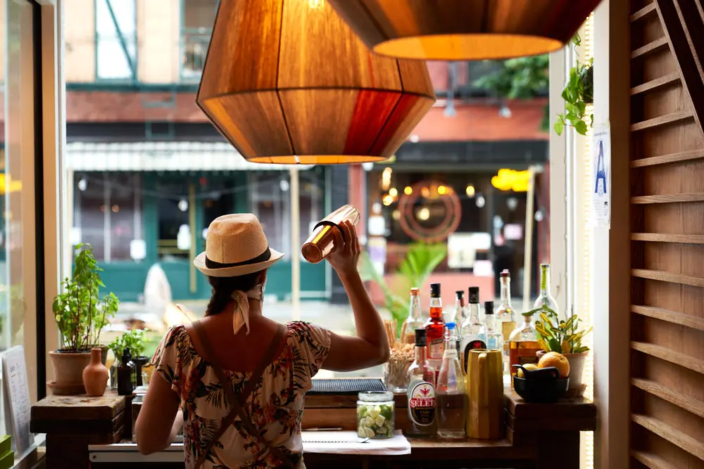

Lado A
WestVillage
O Berimbau original. Um espaço aconchegante para a cozinha brasileira autêntica, dos coquetéis descontraídos aos jantares e brunches animados.
43 Carmine St
Horários
| Seg | 17h – 22h |
|---|---|
| Ter | 17h – 22h |
| Qua | 17h – 22h |
| Qui | 17h – 22h |
| Sex | 17h – 22h30 |
| Sáb | 11h – 22h30 |
| Dom | 11h – 21h30 |
Reserve

Neste lado
Ruas charmosas, cantos escondidos, um pouco de romance e noites que nunca saem exatamente como o planejado.
@berimbau_nyc, sobre o West Village
- Mesas internas e jardim, reservados pelo Resy
- Aberto a partir das 11h nos fins de semana, com menu de brunch
- Feijoada e strogonoff veganos
Só neste lado
Faixas que você não encontra na 36th Street